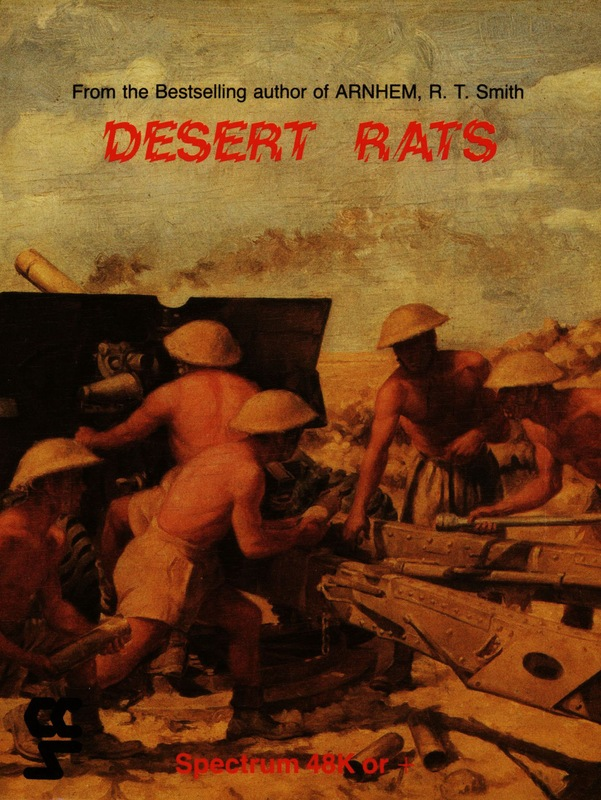
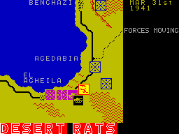

Desert Rats


{kind=link}

| Publisher: | CCS |
| Price: | £9.95 |
| Year: | 1985 |
| Source: | CRASH, Issue 29 |

A couple of months back, CCS’s Desert Rats was sent in for review and although I rated it highly, I neglected to allocate it a Crash Smash status. The reasons for this were actually pointed to by Mr RT Smith, the author, himself. He had had to compromise somewhat to fit such a complex game into the available memory of the Spectrum. The result appeared to be a flawed work of genius. Then two months ago, I speculated on what the game might have been like if only it had been used for the 128K Spectrum and made a general plea for games that would take advantage of this extra memory.
Now it appears that my cries have been heeded. An expanded version of the game has just been released by CCS. With two extra scenarios and some improved features to neaten up the bundle, I was left with no doubt that this was the game I’d been waiting for all along.

units take up positions south of Gazala.
The game now begins in the period prior to Rommel’s arrival in North Africa. These were the days when the largely unsung achievements of Wavell and O’Conner led to the swift demise of the massive but ill-trained Italian Tenth Army. With hindsight, many historians have questioned the wisdom of Winston Churchill in sending Wavell on to other theatres of operation and breaking up the crack force that had developed under his command. His subordinate, O’Conner came more unstuck still, after an over-tired staff driver got lost one night and led him straight into the clutches of a German patrol, resulting in a stay in a POW camp for the rest of the war.
This era is covered over two scenarios, Operation Compass and Beda Fomm. In Operation Compass, the British player has to capture Bardia and Tobruk from the Italians in a 45 turn limit covering the period from 9th December 1940 to 22nd January 1941. The objective of the Italians is to hold position in Egypt and keep the British out of Derna. Beda Fomm presents the British with the objective of capturing Benghazi and devastating the Italian Tenth Army while the Italians themselves must attempt to prevent this and control as much territory as possible. This scenario is the shorter of the two, lasting only 15 turns from 24th January to 7th February 1941.
The scenarios accurately give the player a taste of the Allies’ better days in the North African Campaign, presenting the much more fluid nature of desert warfare that then prevailed. In Desert Rats, the pace of battle is set to reflect this. How much it contrasts with the far more stable days of Montgomery and his ‘safety in numbers’ philosophy! In play, this works very well and provides the less experienced or able player with a large scale but simple backdrop as an introduction to the game.
All of the scenarios from the first game are present but the main campaign game has been altered. The Desert War previously covered the period from Rommel’s first attack in the Spring of 1941 to his withdrawal in December 1942. It was played over 624 turns. In this new version of the game, the scenario begins with the first British offensive in December 1940 and is now played over 736 turns.
There are several other modifications to the rules and presentation. The first that becomes noticable is a joystick option for those with Kempston, Protek or Sinclair interface owners. The obvious ease that this brings to the movement of units across the screen, greatly enhances playability. There is also a demonstration mode available from the main menu, which is entered by holding down the 0 key when selecting the number of players. The demo mode may be left by holding down the M key at the end of a turn.
Mass mobilisations are made somewhat more difficult to organise with the stacking rules now only allowing ten points per square as opposed to thirteen in the earlier version of the game. However, logistical problems should be less severe with the supply range now increased from seven to ten squares and from five to seven squares diagonally. Lybian and Blackshirt units are treated as brigades in the game (despite the fact that they are organised as divisions) because they are disproportionally weak and need to be supplied from an HQ unit.
For those who were looking for a more competent computer opponent, this game doesn’t come up with the goods. However, it offers so much in terms of variety of play and improved presentation and structuring that it has to be seen as a milestone in Spectrum wargaming. If more software houses follow the lead so clearly set by CCS, those people who are considering buying the Spectrum 128 will find themselves spoiled for choice when it comes to challenging quality software.
Presentation 91%
The best feature is the joystick option which speeds up play quite considerably. The demo mode is attractive as well
Rules 97%
The same high quality as the original — not changed significantly
Graphics 70%
Though these have not been modified and, in my opinion, are still poor compared to the rest of the game, I think this is a more accurate rating
Authenticity 91%
The campaign game still requires too much of the Allied player but modifications to order and supply rules are well devised
Value for money 96%
Even if you do not have a Spectrum 128, the improvements to the game are most welcome and make the product worth every penny, especially considering the fact that the old price has been kept
Overall 95%
Whilst some of my original reservations still apply, this game has been so well executed and provides players with so much, to give it anything less than this would be a crime